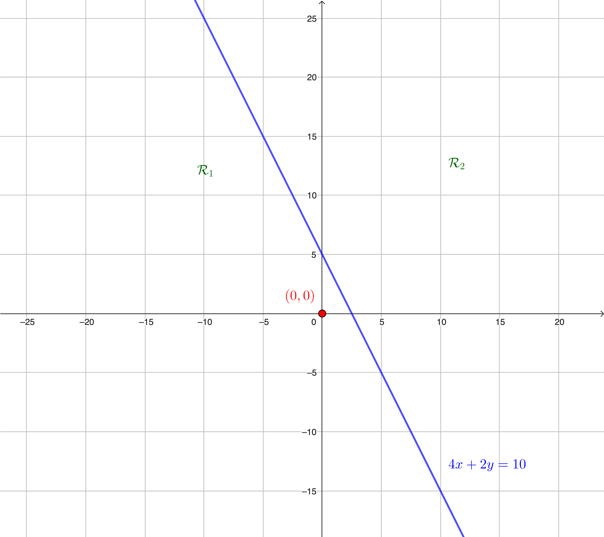
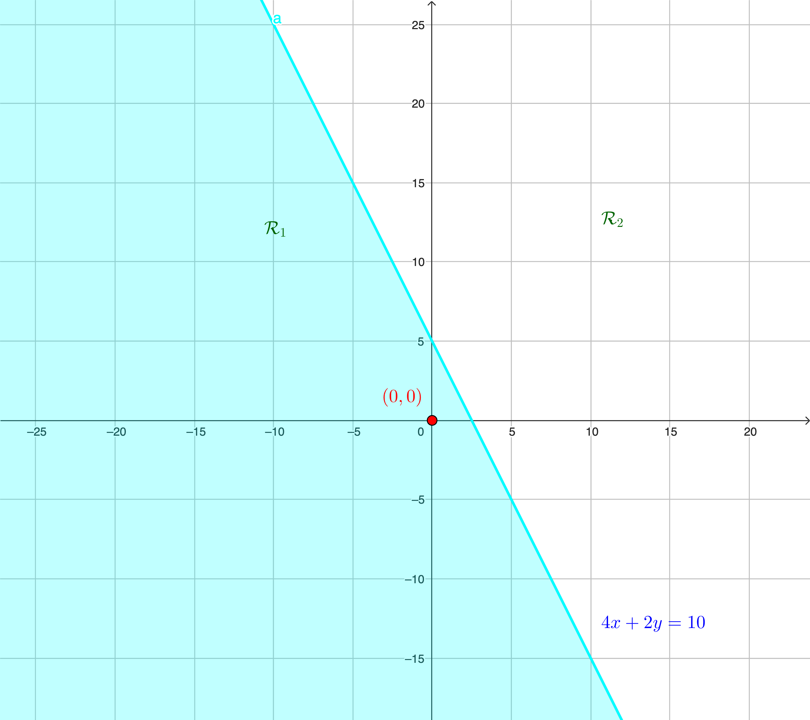
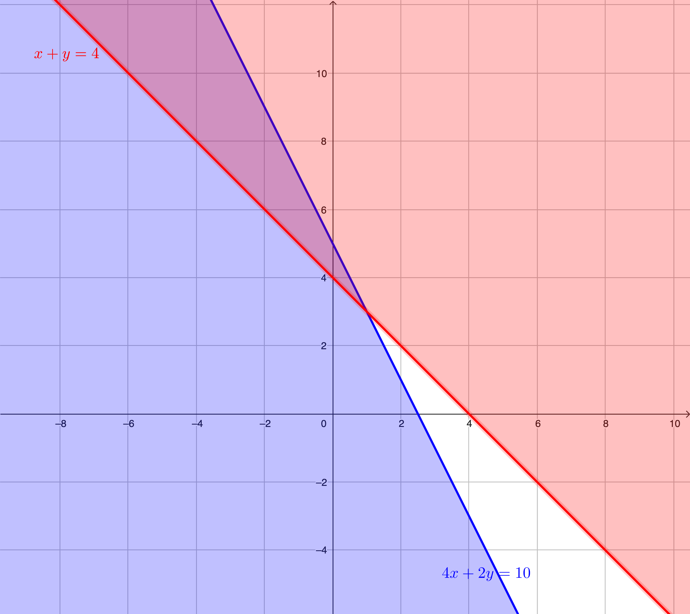
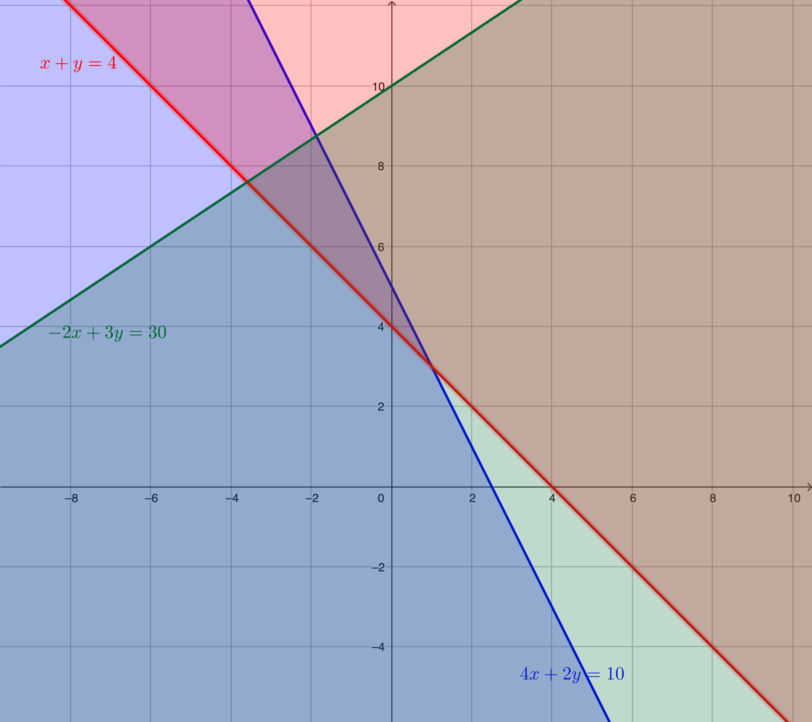
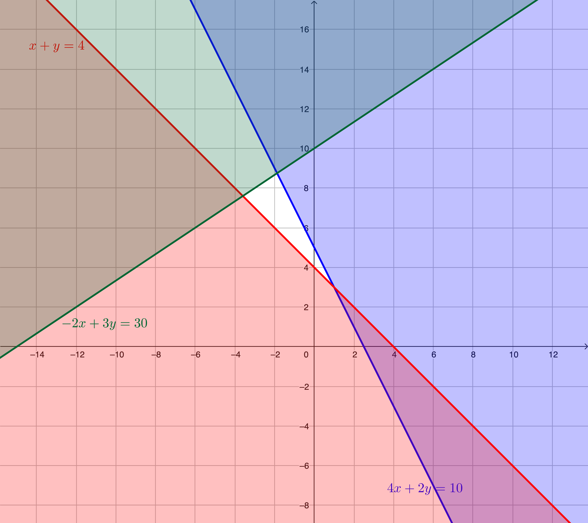

Matemáticas para Ciencias Biomédicas II
Tecnología Médica

Sistemas de desigualdades lineales
Una desigualdad o inecuación es una expresión algebraica que expresa que dos cantidades no son necesariamente iguales, esto es, pueden que ocurra que una cantidad es menor \(<\) que la otra, menor o igual \(\leq\), mayor \(>\) o mayor o igual \(\geq\).
La expresión \(2x+9<3\) es una desigualdad en la variable \(x\).
Dependiendo del valor de \(x\) la expresión \(2x+9<3\) será verdadera o falsa. Si por ejemplo \(x=1\) entonces la expresión queda como \(2\cdot 1+9<3\Leftrightarrow 11<3\) que es un enunciado falso. Por otra parte si \(x=-10\) entonces la expresión \(2\cdot(-10)+9<3\Leftrightarrow-11<3\) es verdadera.
En general si el valor de \(x=a\) hace que la desigualdad resulte en una expresión verdadera diremos que \(a\) es una solución de la desigualdad, y resolver la desigualdad corresponde a encontrar todas las posibles soluciones.
Sistemas de desigualdades lineales
Para poder resolver desigualdades el siguiente teorema es de gran utilidad
Considere números reales \(a,b,c\), entonces
Si \(a<b\) y \(b<c\) entonces \(a<c\).
Si \(a<b\) entonces \(a+c<b+c\) y \(a-c<b-c\).
Si \(a<b\) y \(c>0\) entonces \(ac<bc\) y \(\dfrac{a}{c}<\dfrac{b}{c}\).
Si \(a<b\) y \(c<0\) entonces \(ac>bc\) y \(\dfrac{a}{c}>\dfrac{b}{c}\).
Las propiedades anteriores están enunciadas para la desigualdad menor \(<\), pero también son válidas para las otras desigualdades.
Solo hay que prestar especial atención a la propiedad [des.prop4] que en palabras simples dice que si tengo una desigualdad entre \(a\) y \(b\) y \(c\) es negativo entonces la desigualdad entre \(a\) y \(b\) se invierte cuando se multiplica o divide por \(c\). Por ejemplo, si \(a\geq b\) y \(c<0\) entonces \(ac\leq bc\) y \(\dfrac{a}{c}\leq \dfrac{b}{c}\).
Sistemas de desigualdades lineales
Resolver la desigualdad \(2x+9<3\).
Las propiedades anteriores nos permiten escribir la secuencia de desigualdades equivalentes \[\begin{aligned} 2x+9&<3&\text{(restamos \(9\) a ambos lados)}\\ 2x+9-9&<3-9\\ 2x&<-6&\text{(dividimos por \(2\) a ambos lados)}\\ \frac{2x}{2}&<\frac{-6}{2}\\ x&<-3 \end{aligned}\] es decir el conjunto de soluciones de la desigualdad es el intervalo \(]-\infty,3[\).
Sistemas de desigualdades lineales
Lo anterior nos muestra como resolver desigualdades en una variable, sin embargo nos interesará resolver desigualdades con dos variables \(x\) e \(y\), por ejemplo nos interesa poder resolver la desigualdad \[\label{des-ej2} 3x+y\leq 10.\]
En este caso una solución es un par ordenado \((a,b)\) que hace que la expresión se vuelva verdadera.
Por ejemplo el par ordenado \((1,2)\) es una solución pues al reemplazar en la desigualdad se obtiene \(3\cdot 1+2\leq 10\Leftrightarrow5\leq 10\) que es cierto, mientras que \((3,2)\) no es una solución pues \(3\cdot 3+2\leq 10\Leftrightarrow11\leq 10\) es falsa.
Una solución de una desigualdad con dos variables es un par ordenado \((a,b)\) que hace que la expresión se vuelva verdadera. Resolver una desigualdad con dos variables corresponde a encontrar todas las soluciones de la desigualdad.
Sistemas de desigualdades lineales
Resolver una desigualdad con dos (o mas) variables puede ser complicado, sin embargo para este capítulo solo nos enfocaremos en desigualdades lineales, esto es, desigualdades de la forma \[ax+by< (>,\,\leq,\,\geq) c\] donde \(a,b,c\) son números conocidos.
Para resolver este tipo de desigualdades usaremos un método gráfico que consiste en lo siguiente
Graficamos la igualdad \(ax+by=c\) y notamos que esto corresponde a una recta en el plano cartesiano.
Gráficamente nos percatamos que la recta divide al plano en dos regiones \(\mathcal R_1\) y \(\mathcal R_2\).
Escogemos una de la regiones y tomamos un par ordenado \((x_0,y_0)\) en ella. Por ejemplo supongamos que \((x_0,y_0)\in \mathcal R_1\).
Evaluamos el par ordenado en la desigualdad, es decir, calculamos \(ax_0+by_0<(>,\,\leq,\,\geq)c\)
Si la desigualdad obtenida es cierta, entonces todos los pares ordenados en la región \(\mathcal R_1\) son soluciones. Si la desigualdad es falsa, entonces todos los pares ordenados de la región \(\mathcal R_2\) son soluciones.
Notamos si la desigualdad es \(<\) o \(>\) en contraste con \(\leq\) o \(\geq\). Si la desigualdad es de \(<\) o \(>\), entonces \(\mathcal R_1\) son todas las soluciones. Por otra parte, si la desigualdad es \(\leq\) o \(\geq\) entonces las soluciones son los puntos de \(\mathcal R_1\) y los pares ordenados en la recta \(ax+by=c\).
Sistemas de desigualdades lineales
Resolver la desigualdad \(4x+2y\leq 10\).
Graficamos la recta \(4x+2y=10\).

Notamos que la recta divide al plano en dos regiones \(\mathcal R_1\) y \(\mathcal R_2\).
Consideramos el par ordenado \((0,0)\) que pertenece a la región \(\mathcal R_1\) y lo evaluamos en la desigualdad \[4\cdot 0+2\cdot 0\leq 10\Leftrightarrow 0\leq 10\]
Como la desigualdad es verdadera, todos los puntos de la región \(\mathcal R_1\) son soluciones de la desigualdad, y como esta desigualdad es \(\leq\) entonces todas las soluciones de la desigualdad se pueden ver en el siguiente gráfico.

Sistemas de desigualdades lineales
El método gráfico muestra gran valor cuando nos enfrentamos a sistemas de desigualdades lineales.
Por ejemplo si queremos resolver el sistema \[\left\{ \begin{aligned} 4x+2y&\leq 10,\\ x+y&\geq 4, \end{aligned} \right.\]
Usamos el procedimiento gráfico para ambas desigualdades en un mismo plano cartesiano y obtenemos el siguiente gráfico

Finalmente buscamos la región \(\mathcal R\) que resulta de la intersección de las regiones determinadas por separado en el paso anterior.
Sistemas de desigualdades lineales
La misma idea aplica cuando se tienen mas de dos desigualdades en un sistema.
Resolver el sistema de desigualdades \[\left\{ \begin{aligned} 4x+2y&\leq 10,\\ x+y&\geq 4,\\ -2x+3y&\leq 30. \end{aligned} \right.\]
Graficamos las 3 desigualdades en un mismo plano cartesiano.

Identificamos la intersección de las 3 regiones obtenidas para determinar el conjunto solución \(\mathcal R\).
Sistemas de desigualdades lineales
Puede ocurrir que un sistema de desigualdades puede que no tenga solución.
Resolver el sistema \[\left\{ \begin{aligned} 4x+2y\,&\geq\, 10,\\ x+y\,&\leq\, 4,\\ -2x+3y\,&\geq\, 30. \end{aligned} \right.\]
Al graficar las tres desigualdades obtenemos
y notamos que la intersección de las tres regiones es vacía, es decir, no hay ningún par ordenado que satisfaga simultáneamente las tres desigualdades.